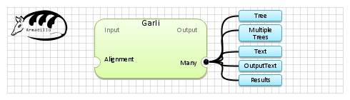

| Name | Garli | |
| View |  | |
| Publication(s) | Zwickl, D. J., 2006. Genetic algorithm approaches for the phylogenetic analysis of large biological sequence datasets under the maximum likelihood criterion. Ph.D. dissertation,The University of Texas at Austin. | |
| Website | https://www.nescent.org/wg_garli/Main_Page | |
| Description | GARLI is a program that performs phylogenetic inference using the maximum-likelihood criterion. Several sequence types are supported, including nucleotide, amino acid and codon. Version 2.0 adds support for partitioned models and morphology-like datatypes. It is usable on all operating systems, and is written and maintained by Derrick Zwickl | |
| Input (1) |
Alignment | |
| Output (5) |
MultipleTrees Tree Results Text OutputText | |
| Keywords (1) | Tree, Phylogenetic inference, Maximum likelihood | |
| Related (5) | DNAML (Phylip) DNAML-Erate fastDNAml PhyML PROTML (Phylip) | |
| Sample workflow | Garli.properties.db |